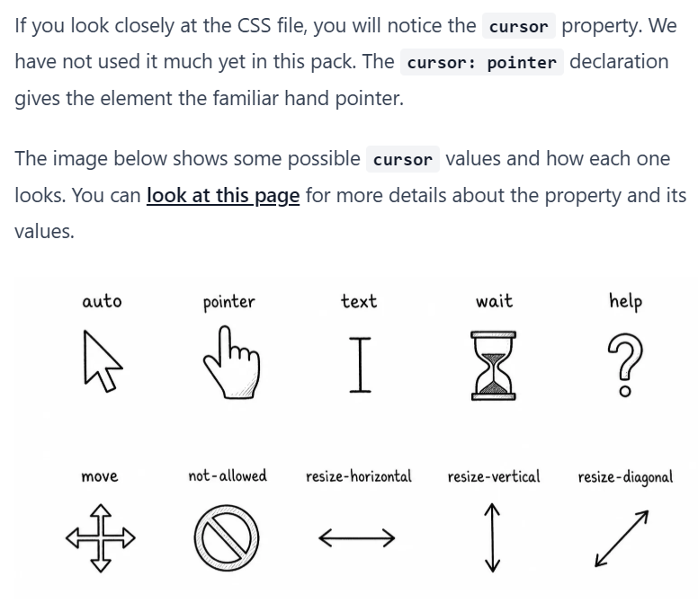
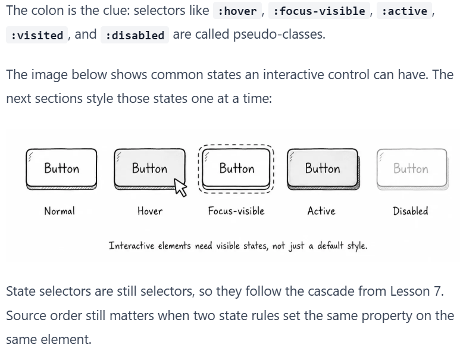
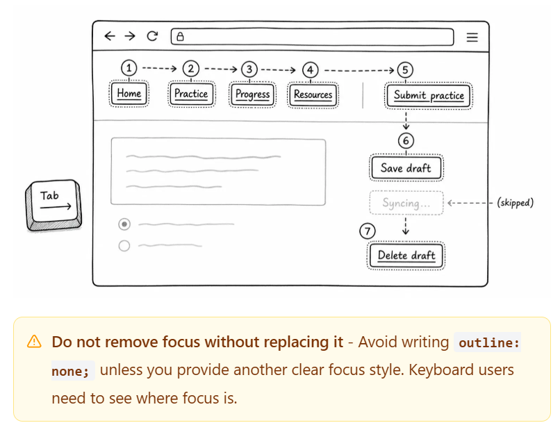

Draft lesson
Publish your CSS notes
Review the style guide before publishing. If the lesson is ready, use the action buttons below.
Cursors:

CSS practice
Interactive elements should look clickable, show focus, and respond when a user interacts with them.
Draft lesson
Review the style guide before publishing. If the lesson is ready, use the action buttons below.

A state selector is a selector that matches an element in a specific condition.
The practice page currently has base styles, but it does not have state styling yet. The controls do not visibly respond when someone hovers, tabs, presses, or reaches a disabled state. CSS handles these conditions with pseudo-classes.
For example, :hover is a pseudo-class that matches when the pointer is over an element:
a:hover {
color: #1d4ed8;
}
The colon is the clue: selectors like :hover, :focus-visible, :active, :visited, and :disabled are called pseudo-classes.

Focus is the state an element enters when it is selected for keyboard interaction.
Press Tab in the browser, and the focus should move through the navigation links, the action link, and the buttons.
The disabled Syncing button should be skipped. Disabled controls cannot receive focus, which is one reason they need a clear disabled style.
Use :focus-visible for a keyboard-friendly focus style.
